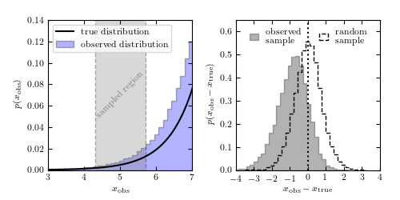

Malmquist Bias Example¶
Figure 5.2
An illustration of the bias in a subsample selected using measurements with finite errors, when the population distribution is a steep function. The sample is drawn from the distribution , shown by the solid line in the left panel, and convolved with heteroscedastic errors with widths in the range . When a subsample is selected using “measured” values, as illustrated in the left panel, the distribution of differences between the “observed” and true values is biased, as shown by the histogram in the right panel. The distribution is biased because more objects with larger true x are scattered into the subsample from the right side, than from the left side where the true x are smaller.
{kind=link}
# Author: Jake VanderPlas
# License: BSD
# The figure produced by this code is published in the textbook
# "Statistics, Data Mining, and Machine Learning in Astronomy" (2013)
# For more information, see http://astroML.github.com
# To report a bug or issue, use the following forum:
# https://groups.google.com/forum/#!forum/astroml-general
import numpy as np
from matplotlib import pyplot as plt
from astroML.stats.random import trunc_exp
#----------------------------------------------------------------------
# This function adjusts matplotlib settings for a uniform feel in the textbook.
# Note that with usetex=True, fonts are rendered with LaTeX. This may
# result in an error if LaTeX is not installed on your system. In that case,
# you can set usetex to False.
if "setup_text_plots" not in globals():
from astroML.plotting import setup_text_plots
setup_text_plots(fontsize=8, usetex=True)
#------------------------------------------------------------
# Sample from a truncated exponential distribution
N = int(1E6)
hmin = 4.3
hmax = 5.7
k = 0.6 * np.log(10)
true_dist = trunc_exp(hmin - 1.4,
hmax + 3.4,
0.6 * np.log(10))
# draw the true distributions and heteroscedastic noise
np.random.seed(0)
h_true = true_dist.rvs(N)
dh = 0.5 * (1 + np.random.random(N))
h_obs = np.random.normal(h_true, dh)
# create observational cuts
cut = (h_obs < hmax) & (h_obs > hmin)
# select a random (not observationally cut) subsample
rand = np.arange(len(h_obs))
np.random.shuffle(rand)
rand = rand[:cut.sum()]
#------------------------------------------------------------
# plot the results
fig = plt.figure(figsize=(5, 2.5))
fig.subplots_adjust(left=0.12, right=0.95, wspace=0.3,
bottom=0.15, top=0.9)
# First axes: plot the true and observed distribution
ax = fig.add_subplot(121)
bins = np.linspace(0, 12, 100)
x_pdf = np.linspace(0, 12, 1000)
ax.plot(x_pdf, true_dist.pdf(x_pdf), '-k',
label='true distribution')
ax.hist(h_obs, bins, histtype='stepfilled',
alpha=0.3, fc='b', density=True,
label='observed distribution')
ax.legend(loc=2, handlelength=2)
ax.add_patch(plt.Rectangle((hmin, 0), hmax - hmin, 1.2,
fc='gray', ec='k', linestyle='dashed',
alpha=0.3))
ax.text(5, 0.07, 'sampled region', rotation=45, ha='center', va='center',
color='gray')
ax.set_xlim(hmin - 1.3, hmax + 1.3)
ax.set_ylim(0, 0.14001)
ax.xaxis.set_major_locator(plt.MultipleLocator(1))
ax.set_xlabel(r'$x_{\rm obs}$')
ax.set_ylabel(r'$p(x_{\rm obs})$')
# Second axes: plot the histogram of (x_obs - x_true)
ax = fig.add_subplot(122)
bins = 30
ax.hist(h_obs[cut] - h_true[cut], bins, histtype='stepfilled',
alpha=0.3, color='k', density=True, label='observed\nsample')
ax.hist(h_obs[rand] - h_true[rand], bins, histtype='step',
color='k', linestyle='dashed', density=True, label='random\nsample')
ax.plot([0, 0], [0, 1], ':k')
ax.legend(ncol=2, loc='upper center', frameon=False, handlelength=1)
ax.set_xlim(-4, 4)
ax.set_ylim(0, 0.65)
ax.set_xlabel(r'$x_{\rm obs} - x_{\rm true}$')
ax.set_ylabel(r'$p(x_{\rm obs} - x_{\rm true})$')
plt.show()